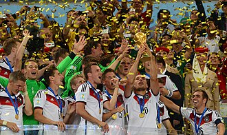

Participaron 202 federaciones afiliadas a FIFA a través de sus equipos representativos, del proceso clasificatorio para determinar las 31 selecciones participantes en el torneo, además del anfitrión. El campeonato se organizó en dos fases: en la primera, se conformaron ocho grupos de cuatro equipos cada uno y avanzaron a la siguiente ronda los dos mejores de cada grupo. Los dieciséis clasificados se enfrentaron posteriormente en partidos eliminatorios hasta llegar a los dos equipos que disputaron la final, el 13 de julio en el Estadio Maracaná de Río de Janeiro.
Durante los octavos y cuartos de final se dieron los resultados más esperados. Destacó la paridad de los enfrentamientos, que se decidieron por mínimas diferencias en el marcador, en el tiempo suplementario o en la tanda de penales.
Durante los octavos y cuartos de final se dieron los resultados más esperados. Destacó la paridad de los enfrentamientos, que se decidieron por mínimas diferencias en el marcador, en el tiempo suplementario o en la tanda de penales.
En la final, Alemania derrotó por 1-0 a Argentina en la prórroga y se coronó por cuarta vez como campeón mundial. Además, fue la primera selección europea en ganar un Mundial en territorio americano.
| pais | posicion | puntos |
|---|---|---|
| Ghana | 4 | 1 |
| Usa | 2 | 4 |
| Portugal | 3 | 4 |
| Alemania | 1 | 7 |